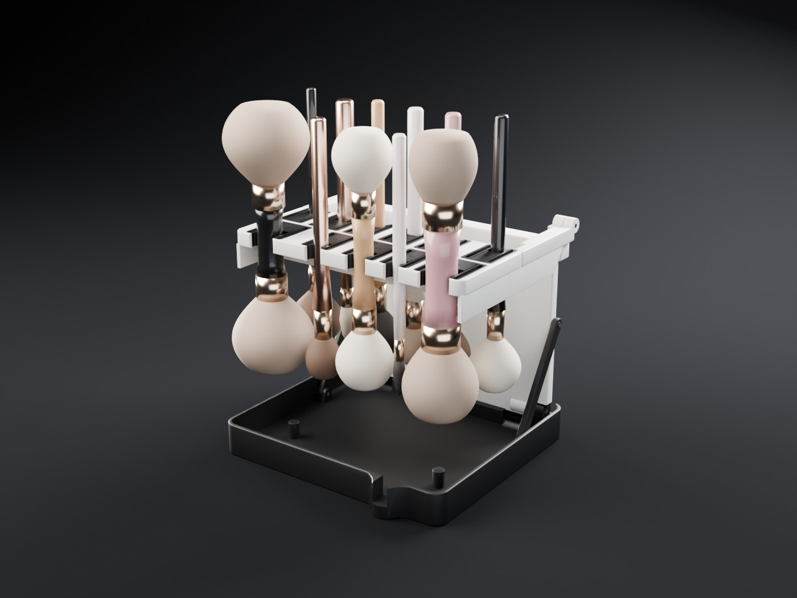
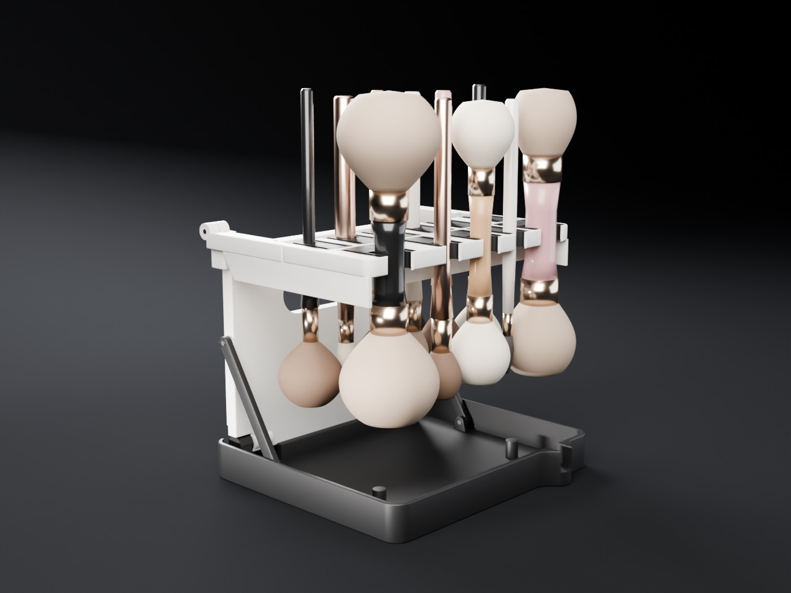
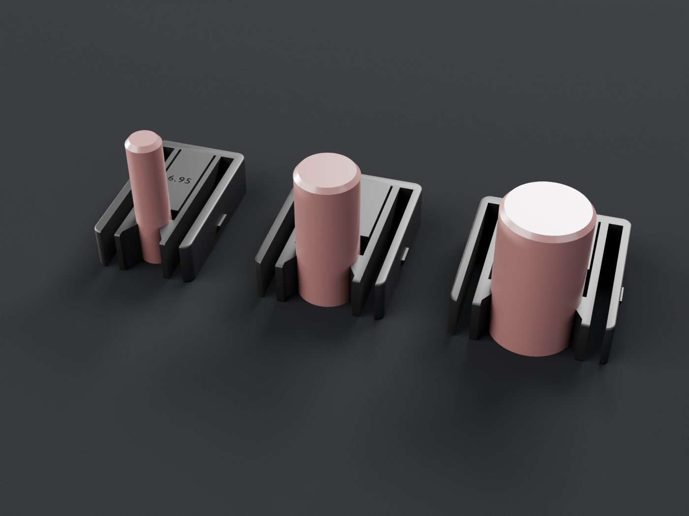
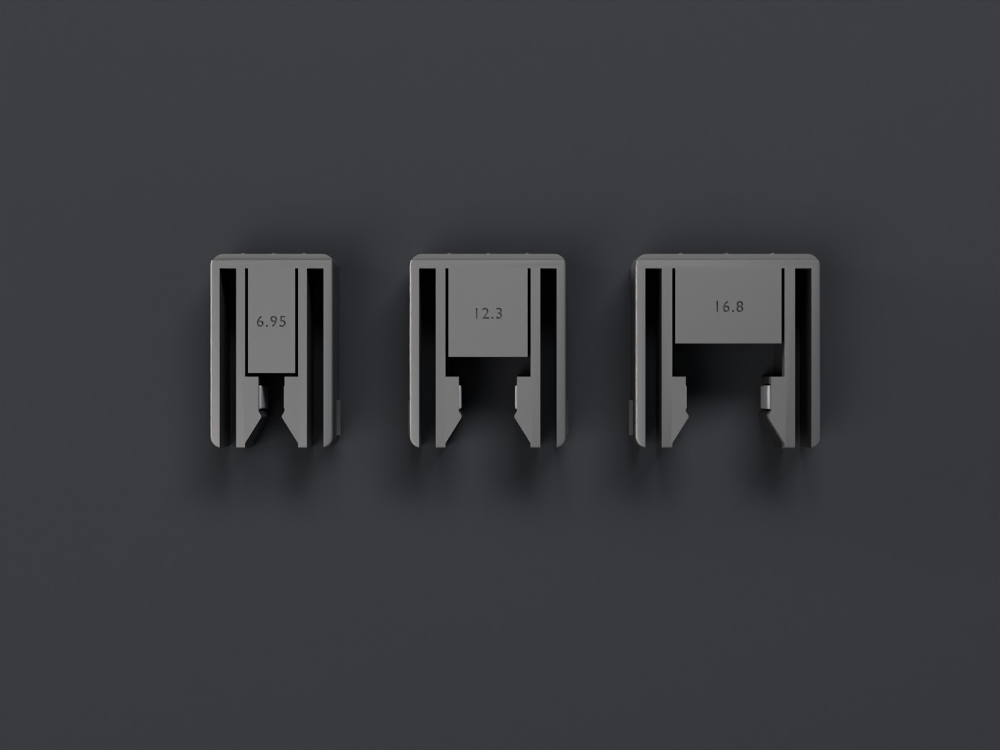
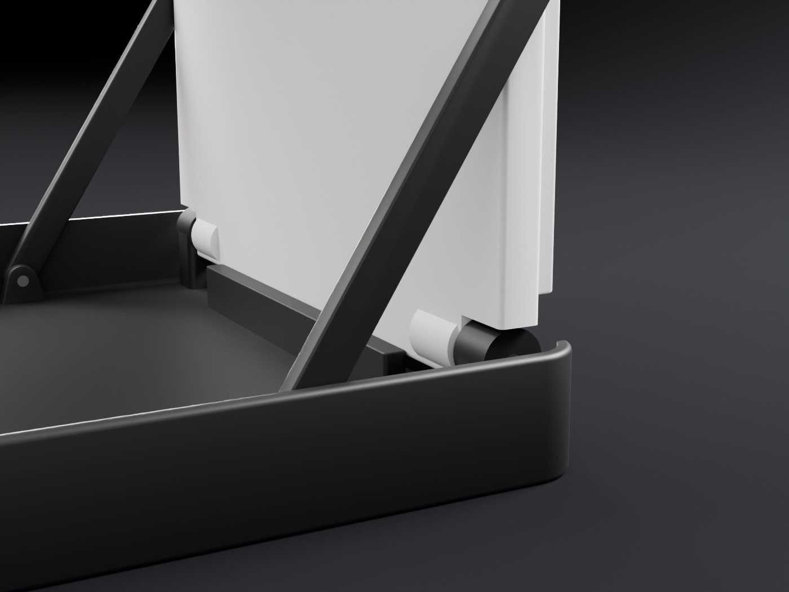
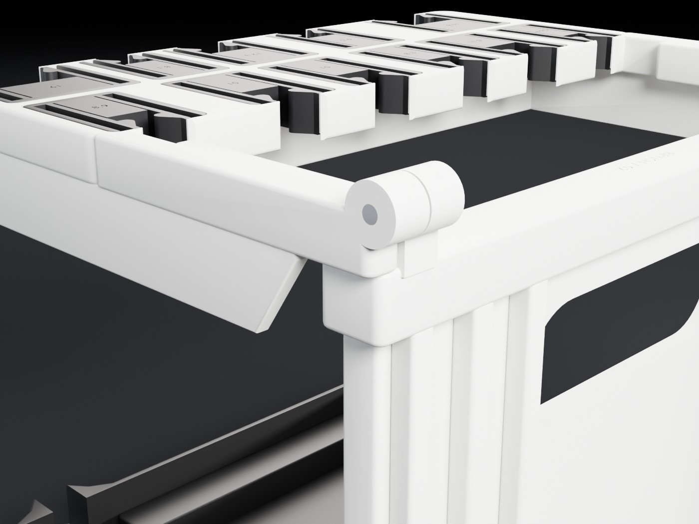
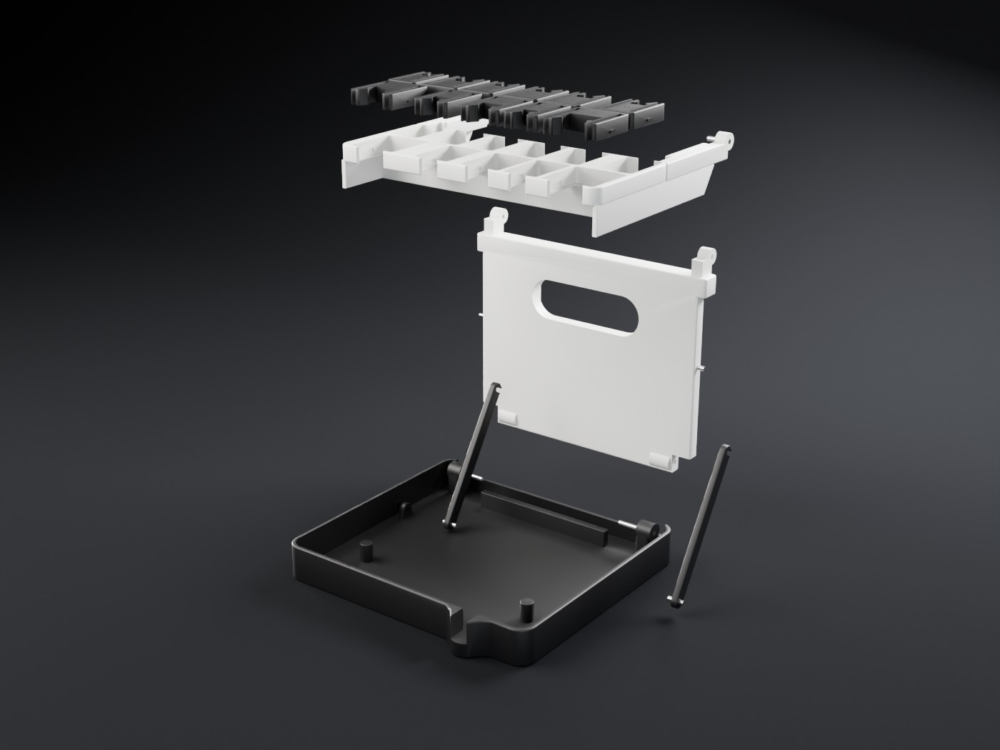

Folio, for 11 brushes
Concept B taken further, built around Chelsea's measured brushes. Eleven clips in two rows, each clip made for one brush. There's a wide loading gap at the back, a pour lip, and two prop stays that lock the panel upright. A stiff frame under the shelf keeps it from sagging, and folded, everything tucks down into the deep black tray. It's a 176 × 169 × 56 mm slab.
White PLA panel and shelf, black PLA tray, stays and clips. Every part fits the A1 Mini bed. Click any image to zoom; click again for full size.




mm, shelf top 152 mm. Handle tops reach about 240 mm.
Shelf on panel on tray.
Including about 80 g of steel ballast. About 570 g loaded with wet brushes.
Front edge as she hangs all 11. About 0.3 mm even after 10 years of her routine.
What changed
One cartridge per brush
Each cartridge is a black frame with two 30 mm spring fingers, pads with a 30° lead-in, and a flat back stop. It drops into its pocket and clicks in. The handle diameter is engraved on top, so you can tell them apart.


Why not two sizes
Your handles run from 6.95 to 19 mm. A friction clip that grips a 3 mm range is weak at the bottom of it: the design review found the heavy double-ended brushes and the thinnest one would hold only about their own weight. A PLA spring also relaxes overnight, which halves a light grip. So each cartridge is tuned to one handle (±0.6 mm), with 1.8 mm of finger deflection.
Still flexible
A cartridge is about 3 g and takes about 20 minutes to print. If Chelsea gets a new brush, print a new cartridge for its handle and swap it in. Finger thickness is set from the brush's wet weight (1.0 mm for light brushes, 1.5 mm for the heavy ones), so every clip holds about twice its brush at a cautious friction value. Strain stays at 0.5% or less.
Steady it while clipping
Pushing a handle in takes about 1.3–1.4 N for the light brushes, 2.8–3.2 N for the face brushes and 3.9 N for the three double-ended ones. The empty stand tips at about 1.5 N even with the steel ballast, because the shelf is 150 mm up. So rest a finger on the shelf for every brush you clip, as you would with any tall rack. Loading the back row first helps too. If you'd rather clip one-handed, TPU pads (about 3× the friction) would let the springs be much softer.
Where each brush goes
| Row | Brush | Handle | Head | Cartridge | Finger | Push to clip |
|---|---|---|---|---|---|---|
| Front, far left | B11 double | 16.8 | 55 / 55 | 16.8 | 1.49 mm | 3.9 N |
| Front | B4 | 9.5 | 23.75 | 9.5 | 1.06 mm | 1.4 N |
| Front, middle | B10 double | 12.3 | 37 / 37 | 12.3 | 1.49 mm | 3.9 N |
| Front | B1 | 8.1 | 8.1 | 8.1 | 1.03 mm | 1.3 N |
| Front, far right | B9 double | 19 (check) | 46.8 / 39.3 | 19 | 1.49 mm | 3.9 N |
| Back, far left | B8 | 6.95 | 38 | 6.95 | 1.40 mm | 3.2 N |
| Back | B2 | 11.9 | 11.9 | 11.9 | 1.03 mm | 1.3 N |
| Back | B5 | 8.3 | 30.5 | 8.3 | 1.33 mm | 2.8 N |
| Back | B3 | 10 | 21.9 | 10 | 1.06 mm | 1.4 N |
| Back | B7 | 10 | 28 | 10 | 1.33 mm | 2.8 N |
| Back, far right | B6 | 8.9 | 34.2 | 8.9 | 1.40 mm | 3.2 N |
All sizes are in mm. Brushes are numbered as in your list. Clip fingers are sized for wet weights from published brushes: 10–15 g for eye and liner brushes, 30–35 g for face brushes, and 42 g for the double-ended ones, which are also held by their waist (please check). The two end brushes of the back row (B8, B6) need a small dogleg: lower the head through the gap about 15–20 mm in from the end, clear of the shelf's side arms, then slide the handle sideways to its clip. Their heads pass under the shelf's side arms.
Close-ups








To fold it
- Take the brushes out and tip out the water.
- Lift each stay off its peg and lay it in the tray.
- Swing the shelf up and over the top so it hangs behind the panel.
- Hold the shelf against the panel and lay both forward onto the tray, like closing a book.
Hardware to buy (about £5)
- Steel dowel pins, Ø3 mm: 2 × 25 mm (panel hinge), 2 × 14 mm (shelf hinge), 2 × 10 mm (stay pivots), 2 × 12 mm (stay pegs). A pack of assorted 3 mm dowels covers it.
- A 100 × 10 × 10 mm steel bar offcut (about 80 g) for the front sill pocket, glued in.
- 4 clear silicone bumper feet, Ø10 mm.
Print plan
- Tray (black): floor-down, 176 × 169 × 22.5 mm deep, so no room for a brim. About 5 h and 113 g at 0.08 mm.
- Panel (white): upright on its foot, long edge along the bed.
- Shelf (white): flat.
- Stays and 11 cartridges (black): flat. Print a spare set of cartridges, since they're the part that wears.
Will it hold, and will it sag?
I worked through every load path by hand, from each brush down to the counter: clip, shelf, rib, side rails, hinge pin and stop, panel, stays, pegs, pivots, tray. The script that does it is structure.py, and an independent review re-derived it.
Loads
Published weights: eye brushes about 8–15 g; full-size face and kabuki brushes about 30–50 g. I assumed the heaviest plausible wet weight for each of Chelsea's: 12–20 g for the small ones, 40–45 g for the face brushes, and 60–75 g for the double-ended ones. That totals 437 g.
Safety factor
The design case doubles every brush, then adds a 4 N push while clipping and a 15 N hand pressing on the front edge. Every part has to stay under PLA's strength divided by 2.5, with layer direction taken into account (half strength across layers). Steel pins are allowed 300 MPa.
Sag
PLA creeps under steady load, so the sag check uses a long-term stiffness of a third of normal: 1.0 GPa, or 0.7 GPa for a warm bathroom. The target was no visible sag: under 1 mm at the front edge after months, and very little when she hangs the brushes.
Front edge drops by less than a hair.
If the brushes stayed on all the time. Her real routine is far gentler: see Over the years.
About 0.3° over the 138 mm shelf.
Brushes doubled, plus a hand on the edge.
| Part (design case) | Stress / force | Allowed | Margin |
|---|---|---|---|
| Shelf plate, front row to cross rib | 0.7 MPa | 18 MPa | 24.9× |
| Cross rib under the shelf | 1.6 MPa | 18 MPa | 11.2× |
| Side rails and cheeks | 2.3 MPa | 18 MPa | 7.9× |
| Cheek where it rests on the panel | 5.8 MPa | 18 MPa | 3.1× |
| Shelf hinge pin (steel), shear | 13.5 MPa | 150 MPa | 11.1× |
| Shelf hinge pin, bearing in the PLA | 4.5 MPa | 18 MPa | 4.0× |
| Shelf hinge ear, pulled across layers | 4.9 MPa | 10 MPa | 2.0× |
| Shelf resting on the panel rail (the stop) | 5.1 MPa | 18 MPa | 3.5× |
| Panel at the carry window | 2.6 MPa | 10 MPa | 3.9× |
| Panel at the stay pegs | 1.9 MPa | 10 MPa | 5.2× |
| Prop stays, buckling | 46 N | 156 N (Euler) | 3.4× |
| Stay pegs (steel) | 56.1 MPa | 300 MPa | 5.3× |
| Stay peg holes in the panel | 3.5 MPa | 18 MPa | 5.2× |
| Stay pivot pins (steel) | 3.3 MPa | 150 MPa | 45.7× |
| Stay pivot holes in the tray | 3.7 MPa | 18 MPa | 4.9× |
| Panel hinge pins (steel) | 3.9 MPa | 150 MPa | 38.5× |
| Panel hinge knuckles | 0.7 MPa | 18 MPa | 27.4× |
| Tray hinge towers | 0.9 MPa | 18 MPa | 19.6× |
| Clip cartridge ledges | 0.0 MPa | 18 MPa | 1100.9× |
What the numbers changed
- The first pass had the shelf hanging from two thin tabs and a thin 6 mm panel propped low. The front edge would have crept about 0.8 mm, and the printed pegs were overstressed.
- Now there's a cross rib and side rails under the shelf (16 mm deep, well above the brush heads). The panel is 8 mm with six back ribs. The stays hook at 85 mm, not 62 mm. The pegs and every pivot are 3 mm steel dowels, and the stay pivots now have a clevis.
- The weakest part left is the shelf hinge ear, at 2× margin under the doubled design load. Everything else has 3× to 40×.
Caveats
- The pin holes have a little clearance, so the shelf sits about 0.7 mm lower at the front even when empty. This is set once by the print, not by the load. Reaming the 3 mm holes with a drill bit keeps it small.
- The stand still tips at about 1.6 N when empty, while clipping a heavy brush takes about 3–4 N. Steady the shelf with a finger.
- PLA strength varies with print settings. The test plate checks the parts most at risk: the clips and the pin fits.
Over the years
Chelsea's routine: unfold, hang the wet brushes for 24 hours, take them off, fold it away for 2–3 weeks. PLA creeps under load, then slowly recovers once the load is off, so the right question is what happens over hundreds of those cycles. Assumptions: conservative PLA creep, the same stiffness I used above; and one hot shower during every dry, counted as an hour at about 30 °C, when PLA creeps roughly 4× faster.
Compared with 0.29 mm in year one. It barely creeps up.
What's left between uses: a few hundredths of a mm.
The 260 dries treated as one 9-month load. A pessimistic estimate.
Brushes never taken off for 10 years. No pattern of use can sag more (0.65 mm with typical creep). That's 0.5° at most.
The frame: good for many years
Ten years of Chelsea's routine leaves the shelf sagging less than it would after three months loaded non-stop. Every 3 weeks instead of 2, it's 0.31 mm. Even if no creep ever recovered it stays under 0.7 mm, and the absolute limit, brushes never taken off for 10 years, is 1.28 mm, about half a degree. Forgetting the brushes on it for a week only adds about 0.07 mm compared with a normal day, and that recovers once it's folded. Steam matters less than you might think: it softens PLA a little for an hour, nowhere near PLA's 55–60 °C softening point. Even a much steamier shower (10× faster creep for 1.5 h every dry) moves a dry's sag from 0.27 to 0.28 mm. Opening the doors helps the brushes dry more than it helps the plastic.
The clips age first
The spring fingers are held bent for each 24-hour dry at about 14 MPa, roughly 30% of PLA's strength. That's much harder working than the frame (under 1.2 MPa), so their grip relaxes faster than this simple model shows, and only partly recovers while stored. The table is optimistic. Plan on the cartridges being consumables: print a spare set now and expect to reprint them about once a year (20 minutes each). The test strip, hung wet for 72 h and then re-checked after a week off, will show the real rate.
| Clip hold safety factor, wet going on / dry at the end (simple model, optimistic) | Typical PLA creep | Conservative creep |
|---|---|---|
| New clip, any dry | 2.0 / 2.18 | 2.0 / 1.88 |
| After 1 year, if none of the relaxation came back | 1.15 / 1.63 | 0.83 / 1.18 |
| After 10 years, if none of it came back | 0.84 / 1.2 | 0.52 / 0.74 |
Test plate: clips and pin fits
A one-plate test in white PLA Matte, the filament synced to the printer. Colour doesn't matter for a grip test. It has a 156 × 100 mm slice of the front row with the three hardest cartridges: 16.8 mm (heaviest brush), 12.3 mm, and 6.95 mm (thinnest handle, big head). There's also a small block printed upright like the panel, with Ø2.95, 3.0 and 3.05 mm holes to check the steel-pin fits.

Plate
- 3 h 56 min · 82 g white PLA Matte
- 0.08 mm Extra Fine, Low-lift A1 Mini profile, Textured PEI
- 4 walls, so the spring fingers are solid wall lines. I checked the toolpaths on every layer of the fingers.
- File:
home-devices/brush-holder/print/clip_test_white.gcode.3mf
How to test
- Lay the strip on the counter with the clips past the edge and a heavy book on the back half.
- Clip in B11, B10 and B8 straight after washing. Note how hard the push is.
- Leave them overnight, ideally 72 h. They should hang without slipping.
- Take the brushes out and leave the strip empty for a week, like the folded stand between uses, then clip them in again. The grip should feel the same as new. This tells us how much the clips recover.
- Push a 3 mm dowel into each hole: 2.95 should be a firm press, 3.05 should turn freely.
Design review
An independent mechanical review swept every fold motion for collisions, sliced each part, and re-derived the clip loads. Four passes so far. The fourth checked the deeper tray (fold sweeps in 2–3° steps, the tray re-sliced) and the creep model. The first found real problems. The second caught a few more: the stay pivot couldn't turn, and a thin skin blocked the hinge dowel. The third checked the strength calculations independently and caught fold clashes from the stiffening, the stay pivot needing a clevis, and two members I had under-checked. All of them are fixed in this version.
Fixed after review
- The shelf mesh had leftover inverted shells from the clip slots and wouldn't slice. Cleaned; all parts are now manifold.
- The panel ran into the hinge towers and the old back stop as it folded. I notched the panel, and a low rib in front of its foot is now the stop.
- The cartridges would fall out when the shelf flips. They now sit on a ledge and click in with snap bumps.
- The hinges had no pins. Steel Ø3 dowels are now pressed into tight Ø2.95 bores and turn in Ø3.2 bores.
- Grip on the heaviest brushes was only about 1× their weight. Per-brush cartridges now hold about 2×.
- Pushing a brush in could tip the empty stand. There's now a ballast sill and wider-set feet, and the instruction to steady it.
- The flange counterbores broke through the shelf edges. I dropped the flange.
- Also fixed: the stay pivot pin was weak, so it's now a dowel in double shear through a clevis tab; the stay hook has a light detent; the back-stop has only about 1° of play; the snap bumps have a lead-in ramp; the ballast pocket has a proper wall; and the rail now has stowing clearance.
Still open
- Real grip. Friction on lacquered handles has to be tested. The test plate is sliced and ready.
- Double-ended handles. I assumed they're thinnest at the middle (a waist), which locks them in the clip. If B9, B10 or B11 is thickest in the middle instead, its clip needs a stiffer spring. Please measure each with calipers at the middle and 15 mm either side.
- B9's stem was noted as "9 or 19 mm". Please re-measure it. The cartridge is a 20-minute reprint either way.
- Head spacing is about 3 mm between some neighbours, using dry, fluffed sizes. Wet heads are slimmer.
- The tray is 178 × 169 mm, so I need to check its fit against the A1 Mini purge line in Bambu Studio when slicing.
What I need from you
1 · Print the test plate?
It's sliced but not sent. Say yes and open print/clip_test_white.gcode.3mf in your Bambu Studio. I won't start Bambu Studio myself or print without your go-ahead.
2 · Measure the double-ended handles
Measure B9 (noted as "9 or 19"), B10 and B11 at the middle and 15 mm either side. If you can, also weigh a couple of wet brushes on a kitchen scale.
3 · Then
Once the clips grip well and the pins fit, I'll adjust the cartridges and bores to match, slice the full set, and show you the plates, times and filament before anything prints.